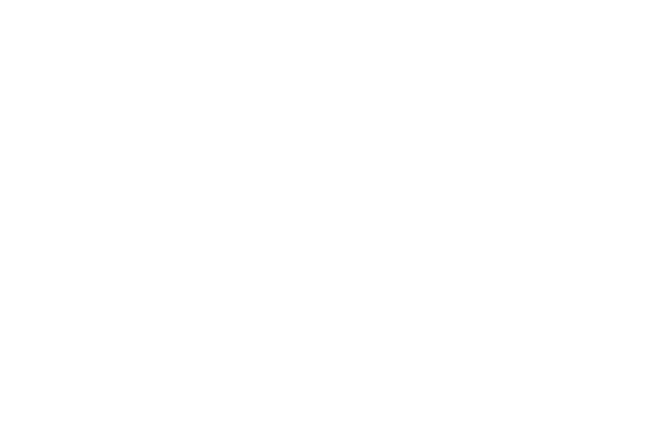

Welcome to my interactive exploration of SF crime data. Below are three key visualizations showcasing spatial and temporal trends.
A high-level overview of incident volume over the years.

Interactive breakdown of when different crimes occur. Click the legend to toggle categories!
Geographic hotspots across the city. You can pan and zoom to explore specific streets.